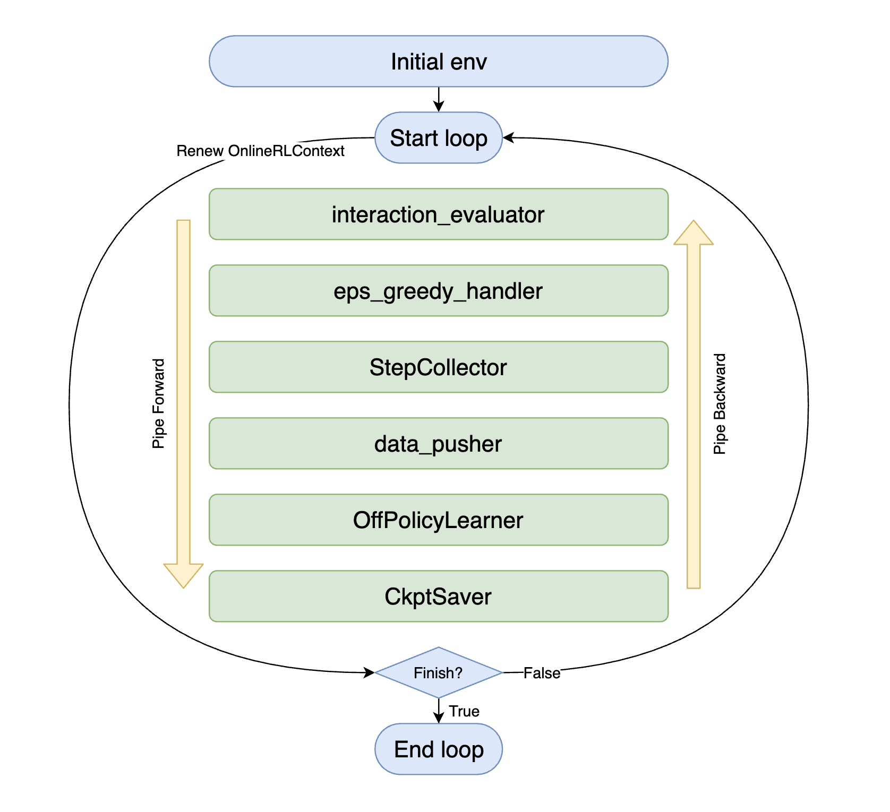
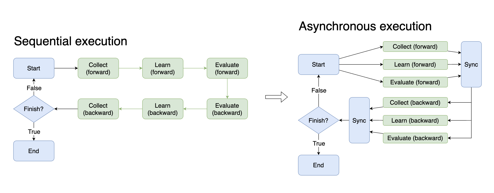
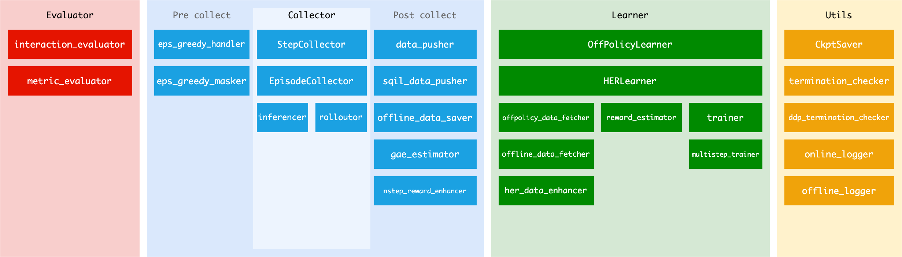

Middleware¶
In most reinforcement learning processes, there is a ‘collect-learn’ cycle between the environment and the agent – get data from the environment, train the agent, get better data, and so on. We will introduce the characteristics of each environment in the DI-zoo chapter, and here we will focus on implementing the interaction strategy of the agent.
The complex strategy of reinforcement learning dictates that it is difficult to abstract all the entities involved in the interaction with objects, and as better strategies and algorithms continue to emerge, there is an endless supply of new concepts and objects. So our idea was not to do object abstraction, but to encapsulate only the process, and to ensure that the encapsulated code is reusable and replaceable. This gives rise to the concept of middleware, the foundation of the DI-engine.
{kind=link}
As you can see above, each middleware (the green part in the picture) can be presumed by its name alone, and you only need to select the appropriate method in the DI-engine’s middleware library to combine them and complete the entire interaction strategy of the agent.
with task.start(async_mode=False, ctx=OnlineRLContext()):
task.use(interaction_evaluator(cfg, policy.eval_mode, evaluator_env))
task.use(eps_greedy_handler(cfg))
task.use(StepCollector(cfg, policy.collect_mode, collector_env))
task.use(data_pusher(cfg, buffer_))
task.use(OffPolicyLearner(cfg, policy.learn_mode, buffer_))
task.use(CkptSaver(cfg, policy, train_freq=100))
task.run(max_step=100000)
Once you are familiar with the middleware, you will see that the major schools of reinforcement learning – Onpolicy, Offpolicy, Offline, etc. – have so many reusable parts of the process. With a few simple selection, you can transform the interaction flow of an offpolicy process into an onpolicy process.
with task.start(async_mode=False, ctx=OnlineRLContext()):
task.use(interaction_evaluator(cfg, policy.eval_mode, evaluator_env))
task.use(StepCollector(cfg, policy.collect_mode, collector_env))
task.use(gae_estimator(cfg, policy.collect_mode))
task.use(multistep_trainer(cfg, policy.learn_mode))
task.use(CkptSaver(cfg, policy, train_freq=100))
task.run(max_step=100000)
Context¶
Contexts are messengers that pass data between middleware, and different interaction policies determine what type of context they should use.
For example, OnlineRLContext and OfflineRLContext are provided in DI-engine.
@dataclasses.dataclass
class OnlineRLContext(Context):
# common
total_step: int = 0
env_step: int = 0
env_episode: int = 0
train_iter: int = 0
train_data: Union[Dict, List] = None
...
def __post_init__(self):
self.keep('env_step', 'env_episode', 'train_iter', 'last_eval_iter')
The OnlineRLContext holds the data needed for online training, and the task of each middleware is to use this data and submit new data to the context. For example, the task of the OffPolicyLearner middleware is to train the model using ctx.train_data and write the training results back to ctx.train_iter.
At the beginning of each loop, the context is replaced by a new instance, which ensures that the middleware only needs to focus on the data flow within a single loop, simplifying the logic and reducing the risk of memory leaks.
If you need to save some variables to the next loop, such as env_step, train_iter, and other values that need to be accumulated, you can set it as a reserved field with the ctx.keep method. The variables called by ctx.keep are reserved for the next iteration, when the context is initialized to a new instance, and the other variables will be reinitialized. Note that, in theory, ctx.keep does not need and should not be used to keep collections or more complex variables, such as list, dict, torch.tensor, or torch.nn.Module. It should only keep int, float and other types of data to the next iteration, if needed.
Note: __post_init__(self) is a method called immediately after __init__(self). In our Context, it means calling this method after each field is initialized. We call self.keep in this function because we need to initialize each field before calling self.keep to keep selected variables.
v0.4.2 changes: Update Context from dict to dataclass¶
In v0.4.2, We changed the Context from dict to dataclass. The reason for this change is:
Prevent the arbitrary addition of new variables during development, i.e. the variables in context must be clearly defined in the definition of Context class.
Prevent the access of variables using string, i.e. prevent ctx[‘xxx’].
Because for middlewares, passing data through Context is different from passing data through input and output parameters of a function, for which there is an enforced constraint. Arbitrarily defining a new variable externally, or using strings to access variables in the Context, can easily lead to confusion when reading code or cooperation, and can easily lead to errors when combing different middleware together.
By changing the Context to the dataclass, we use the attributes rather than strings to access specific variables in the Context, and prevent the addition of new fields externally. If you need to add a new field to the Context, please do it during the initialization phase . Here’s a concrete example of a custom Context:
@dataclasses.dataclass
class MyContext(Context):
# common
total_step: int = 0
var1: int = 0
var2: int = 0
var3: Union[Dict, List] = None
var4: List = None
def __post_init__(self):
self.keep('var1', 'var2')
If you think a new field needs to be added to DI-egnine, make a PR to DI-engine and explain it.
The introduction of Context variables¶
Note: Updated position does not include the case that ctx.attribute = None.
OnlineRLContext¶
Attribute |
Keeped |
Type |
Role |
Updated position |
|---|---|---|---|---|
total_step |
True |
int |
The number of total iteration steps. |
In the beginning of each middleware execution loop. |
env_step |
True |
int |
The number of environment steps. |
rolloutor |
env_episode |
True |
int |
The number of environment episodes. |
rolloutor |
train_iter |
True |
int |
The number of training iterations. |
trainer, multistep_trainer |
train_data |
False |
Union[Dict, List] |
The fetched data used to be trained. |
gae_estimator, offpolicy_data_fetcher, offline_data_fetcher, her_data_enhancer |
train_output |
False |
Union[Dict, List[Dict]] |
The training output including logit, action and other info. |
OffPolicyLearner, HERLearner(List), trainer, multistep_trainer(Dict) |
collect_kwargs |
False |
dict |
The dict include epsilon value. |
eps_greedy_handler |
obs |
False |
ttorch.Tensor |
The input observations collected from all collector environments. |
inferencer |
action |
False |
List |
The inferred actions listed by env_id. |
inferencer |
inference_output |
False |
Dict[int, Dict] |
The dict of which the key is env_id (int), and the value is inference result (Dict). |
inferencer |
trajectories |
False |
list |
The trajectories collected from environment. |
StepCollector, nstep_reward_enhancer |
episodes |
False |
list |
The episodes collected from environment. |
EpisodeCollector |
trajectory_end_idx |
False |
list |
The end index of each trajectory in ctx.trajectories. |
StepCollector |
eval_value |
False |
float |
The average reward in the current evaluation. |
interaction_evaluator, metric_evaluator |
last_eval_iter |
True |
int |
The last ctx.train_iter that is evaluated. |
interaction_evaluator, metric_evaluator |
OfflineRLContext¶
Attribute |
Keeped |
Type |
Role |
Updated position |
|---|---|---|---|---|
total_step |
True |
int |
The number of total iteration steps. |
In the beginning of each middleware execution loop. |
train_epoch |
False |
int |
The count of training epoches. |
offline_data_fetcher |
train_iter |
True |
int |
The number of training iterations. |
trainer, multistep_trainer |
train_data |
False |
Union[Dict, List] |
The fetched data used to be trained. |
gae_estimator, offpolicy_data_fetcher, offline_data_fetcher, her_data_enhancer |
train_output |
False |
Union[Dict, List[Dict]] |
The training output including logit, action and other info. |
OffPolicyLearner, HERLearner(List), trainer, multistep_trainer(Dict) |
eval_value |
False |
float |
The average reward in the current evaluation. |
interaction_evaluator, metric_evaluator |
last_eval_iter |
True |
int |
The last ctx.train_iter that is evaluated. |
interaction_evaluator, metric_evaluator |
Using task to execute tasks asynchronously¶
Task is a global object used by DI-engine to manage reinforcement learning interaction tasks. All runtime state is maintained within task, and some syntactic sugar is provided to help make the process easier.
Asynchrony is of great benefit in a time-critical training environment. If the data for the next training (CPU intensive work) can be collected while the model is being trained (GPU intensive work), the training time can theoretically be halved. To implement the asynchrony, one needs to control complex processes and carefully maintain various states. Now, with middleware and tasks, it is possible to change only one parameter to achieve asynchrony in each step.
# Sequential execution
with task.start(async_mode=False, ctx=OnlineRLContext()):
...
# Asynchronous execution
with task.start(async_mode=True, ctx=OnlineRLContext()):
...
In addition to training and collection, there are many ways to take advantage of asynchrony, such as moving the next batch of data to the GPU earlier while training the model, and evaluating the performance of historical models while training the model. In practice, you may want to try more to speed up the whole interaction process by asynchronous execution.
Middleware in different stages¶
Most of the middleware can correspond to different stages. You can see the correspondence between the existing middleware and the stages in the following diagram in order to combine the various middleware correctly.
